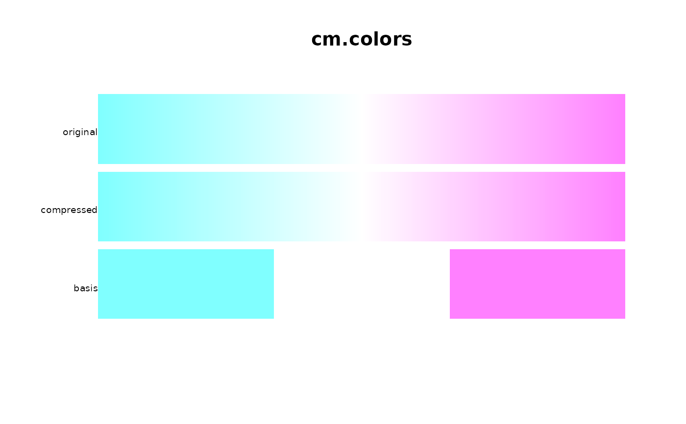
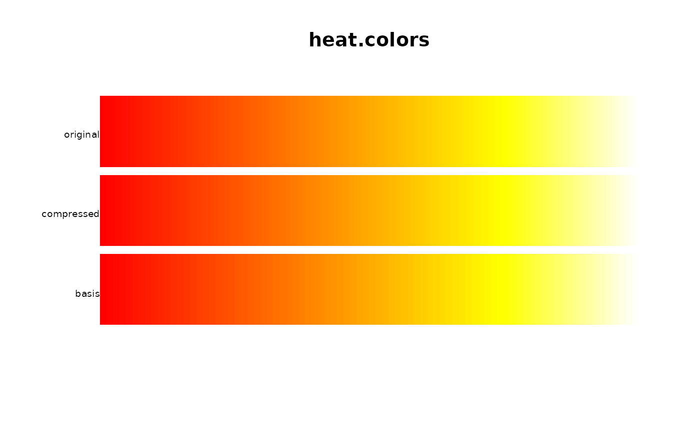
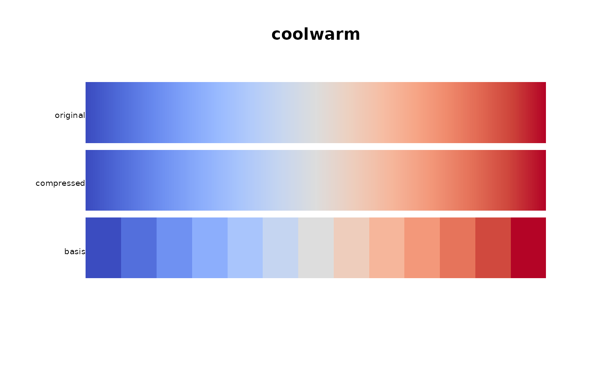

Compress a colormap function to fewer colors
Details
Colormap functions are often defined with many more colors than needed. This function compresses a colormap function down to a sample of colors that can be passed into 'colorRampPalette' and re-create the original palette with a just-noticeable-difference.
Colormaps that are defined as a smoothly varying ramp between a set of colors often compress quite well. Colormaps that are defined by functions may not compress well.
Examples
# The 'cm.colors' palette in R compresses to only 3 colors
cm2 <- pal.compress(cm.colors, n=3)
pal.bands(cm.colors(255), colorRampPalette(cm2)(255), cm2,
labels=c('original','compressed','basis'), main="cm.colors")

# The 'heat.colors' palette needs 84 colors
heat2 <- pal.compress(heat.colors, n=3)
pal.bands(heat.colors(255), colorRampPalette(heat2)(255), heat2,
labels=c('original','compressed','basis'), main="heat.colors")

# The 'topo.colors' palette needs 249 colors because of the discontinuity
# topo2 <- pal.compress(topo.colors, n=3)
# pal.bands(topo.colors(255), colorRampPalette(topo2)(255), topo2,
# labels=c('original','compressed','basis'), main="topo.colors")
# smooth palettes usually easy to compress
p1 <- coolwarm(255)
cool2 <- pal.compress(coolwarm)
p2 <- colorRampPalette(cool2)(255)
pal.bands(p1, p2, cool2,
labels=c('original','compressed', 'basis'), main="coolwarm")

pal.maxdist(p1,p2) # 2.33
#> [1] 2.07927